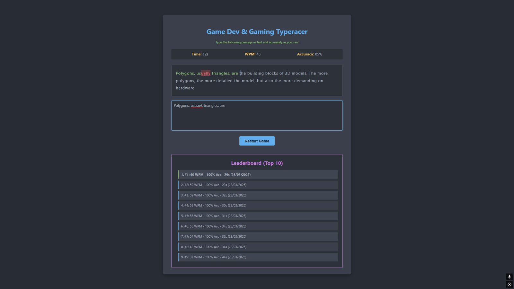

Type Racer
A web game that challenges you to type faster and more accurately. A spare-time project, inspired by the Donald Duck typing game I learned to type with as a kid.
- My role
- Solo: design & development
- Tech
- HTML, CSS, vanilla JavaScript
- Concepts
- DOM, events, timing
- Context
- Personal project

Typing as a game loop
I designed the interface and wrote the core logic in vanilla JavaScript.
- A text fragment to type.
- Real-time tracking of typed characters against the source text.
- Visual feedback for correct and wrong keystrokes.
- Words per minute and accuracy when you finish.
- A locally stored leaderboard.
What I learned
A great exercise in front-end JavaScript, DOM manipulation and event handling, and in building game-like logic such as scoring and timing with nothing but web technology.
Type Racer
Een webgame die je uitdaagt sneller en nauwkeuriger te typen. Een project uit mijn vrije tijd, geïnspireerd door het Donald Duck-typespel waarmee ik als kind leerde typen.
- Mijn rol
- Solo: ontwerp & development
- Techniek
- HTML, CSS, vanilla JavaScript
- Concepten
- DOM, events, timing
- Context
- Persoonlijk project
Typen als game loop
Ik ontwierp de interface en schreef de kernlogica in vanilla JavaScript.
- Een tekstfragment om te typen.
- Real-time vergelijken van getypte tekens met de brontekst.
- Visuele feedback bij goede en foute toetsaanslagen.
- Woorden per minuut en nauwkeurigheid aan het einde.
- Een lokaal opgeslagen leaderboard.
Wat ik leerde
Een goede oefening in front-end JavaScript, DOM-manipulatie en event handling, en in het bouwen van game-achtige logica zoals score en timing met alleen webtechniek.